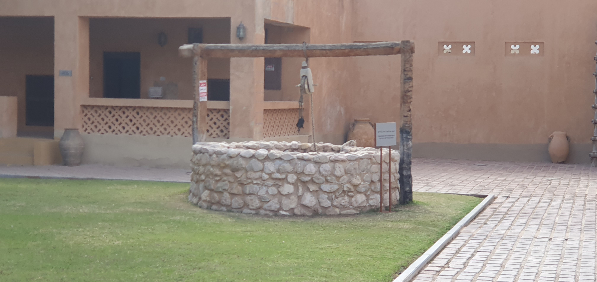
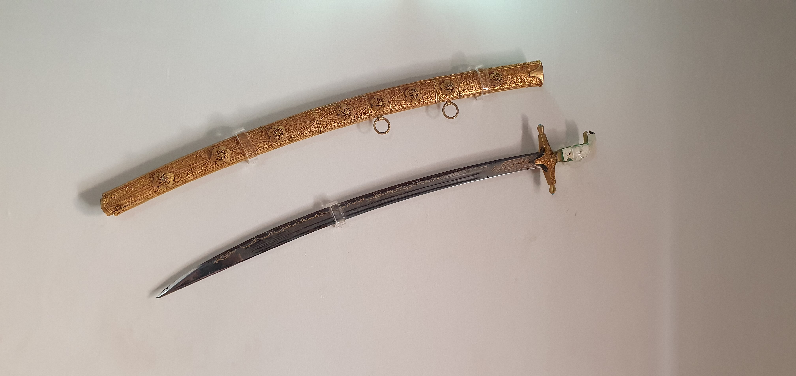

Upon entering the palace, it's clear that every detail has been carefully planned and executed. The ornate plasterwork, intricate tile patterns, and detailed wood carvings are all examples of the artistry that went into the palace's design. It's clear that the building was meant to be a showcase of the wealth and power of its occupants.
At the same time, the palace is more than just a work of art. The various rooms and spaces are clearly designed with sepcific function in mind, with each serving a specific purpose. Despite the grandeur of the palace, it is not just for viewing. Visitors are encouraged to enter and explore the various rooms and exhibits, giving them a sense of what it would have been like to live in such a grand and opulent setting.
Of course, there have been certain alterations to the site as time went on, but it actually complements the palace, giving insight to the audience about the past.
The building is divided into a number of interconnected rooms and halls, each with its own unique character and purpose. Some of the rooms are grand and imposing, with high ceilings and ornate plasterwork. The living quarters, on the other hand, are more intimate and comfortable, with cozy sitting rooms and bedrooms decorated with traditional Emirati textiles and furnishings.
The gardens surrounding the palace are lush and well-maintained, with colorful flowers and plants carefully designed in various ways, adding to the overall sense of beauty and tranquility.
The museum is generally quite quiet and peaceful. The sounds of footsteps, chirping of birds and the rustling of trees in a gentle breeze creates an unique harmony giving a sense of serenity. The palace itself is open and transparent, with high ceilings and plenty of natural light filtering in. The use of color, texture, and light and shade
are all important elements of the design, adding to the overall sense of beauty and grandeur.
The palace and its gardens are designed to appeal to history and culture enthusiasts, families, and those seeking a peaceful and scenic spot for a stroll or picnic.
The palace and its gardens are open to the public and welcome visitors of all ages and backgrounds.
The gardens offer a peaceful and serene spot to relax and take in the natural beauty of the area. The fountain, for instance, provides an excellent place to sit, relax and enjoy the sound of the water flowing. Furthermore, the way in which the water flows into the pond sliding on the slanted walls gives a natural feeling.
The garden and greenspace are a central part of the palace experience, providing visitors with an oasis of calm amidst the hustle and bustle of the city. The gardens are well-maintained, and the lush greenery, colorful flowers, provide a peaceful and relaxing escape from the surrounding urban landscape.
The palace's gardens are home to a wide variety of plants, including palm trees, bougainvillea, jasmine, and other native species. These plants are arranged in a series of interconnected gardens and courtyards, each with its own character and atmosphere. The gardens are well-maintained and provide a lush and verdant backdrop to the palace.
In terms of hardscape elements, the palace gardens feature a range of paths and walkways that guide visitors through the different areas of the gardens. The paths are made of traditional materials such as natural stone. Visitors will also find benches and seating areas scattered throughout the gardens, providing a comfortable spot to rest and take in the sights and sounds of the palace and its gardens.
Further into the palace, one would find the living quarters of the people during that time.

One aspect of the garden that completely hooked me in was the rooms inside the buildings. The beds, sheets and the artifacts such as sword or gun situated in the rooms took me as a surprise.
These objects were more than enough to make me truly wonder of the past.
The distinguishing aspect of this place is that while you enjoy the scenery and the nature, you learn about the lifestyle, atmosphere, and the mindset of the people of that time, and most importantly gives you the opportunity and the environment to wonder.
Al Ain Palace Museum is an excellent combination of museum and garden, enabling people to relax and destress while also learning new things about the country. The palace not only acts as a medium for the knowledge and culture from the past to the present, but it also gives an inspiration to the people, further shaping a small yet significant part of the modern world.
I believe that the palace is an ideal destination for a wide range of activities and experiences, from historical tours and cultural activities to picnics and leisurely strolls through the gardens. The palace is also a suitable spot for photography, with the palace and its gardens providing a beautiful and historic backdrop and the lighting through the trees enhancing scenery.
To improve the park's intended functionality and expand its range of functions, the palace could offer more guided tours and educational activities, as well as cultural events such as traditional music and dance performances. Additionally, providing more shaded areas and water features, such as fountains, in the gardens could improve the park's functionality. Adding amenities such as more food and drink options could also provide more opportunities for visitors to spend the day in the park.
As I journeyed through the Al Ain Palace Museum, I noticed numerous architectural and cultural elements that is unique to this place alone, which gave me the sense of gazing upon the palace as the remnant of the past dreams and the capabilities that question whether we are at the end of the journey or in another historical continuum.
The perfection of this place resides in the fact that the perspectives of those who see it varies to a greater extent, therefore it is difficult to strictly categorize this place strictly as a garden or a museum. Whether you're interested in history and culture, or simply looking for a peaceful and beautiful spot to spend some time, the palace and its gardens are definately the right choice for everyone.